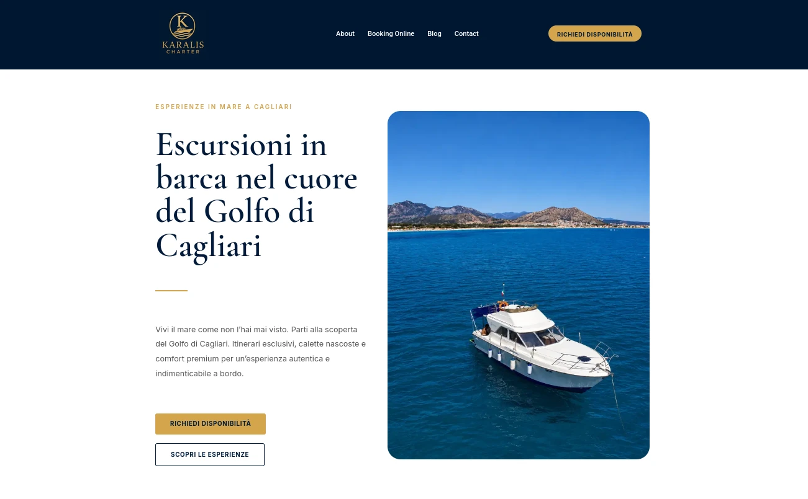

Nautical & Charter
Karalis Charter
Complete website restyling and implementation of custom features to enhance user experience, online booking performance, and brand presence for a luxury charter service in Sardinia.
We turn vision into code with elegance and precision. A curated approach to digital development.

In Japanese production philosophy, 'Muda' means waste. We apply this concept to design and code, removing everything that does not add value to the final user experience. The result is a clean, essential, focused interface.
Continuous improvement ('Kaizen') is at the center of our process. We never settle for the first iteration. We refine, optimize, and perfect every line of code and every visual detail until we reach the right balance.
01
We start with a conversation. You tell me your idea, your goals, and what you expect from your new website. This helps me understand who you are and create something that truly represents you.
02
This is where the work takes shape. I turn the concepts we discussed into a real structure that is fast, responsive, and beautiful on every device.
03
I never settle for the first result. I check every detail, correct small flaws, and make sure everything flows smoothly. This is where your website becomes truly polished.
04
Once everything is ready and you are satisfied, I take it live. I publish your website, configure it correctly, and make sure it is ready to be found by your customers.

Complete website restyling and implementation of custom features to enhance user experience, online booking performance, and brand presence for a luxury charter service in Sardinia.
An advanced digital intelligence dashboard for open-source research. It combines high-density information with a clean, functional interface for efficient analysis.


An exclusive social networking concept where authenticity has value. Designed with a premium, focused aesthetic to maximize brand signal and minimize noise.
For me, web development is a balance between art and logic. I apply Muda to remove everything that slows down your site, leaving space only for the essentials and speed. Through Kaizen, I refine every line of code through continuous improvement, delivering solid, secure solutions ready to grow over time.
WordPress · HTML5 · CSS · JavaScript · PHP · UX/UI
Write to me to explore how we can collaborate.